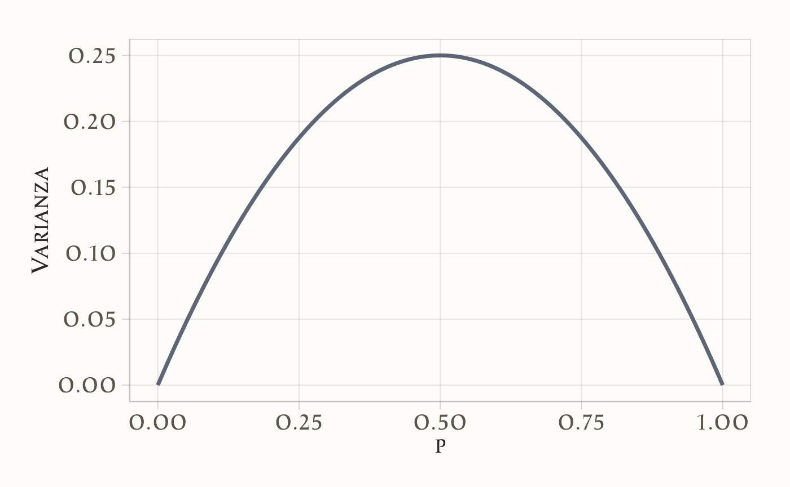
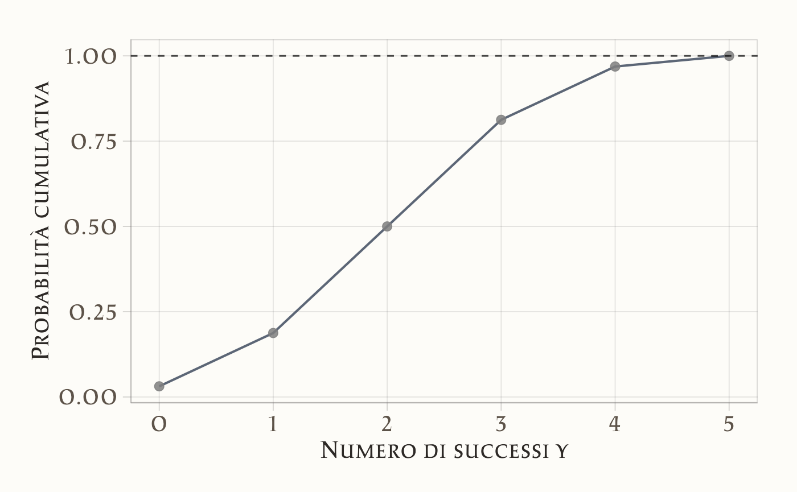
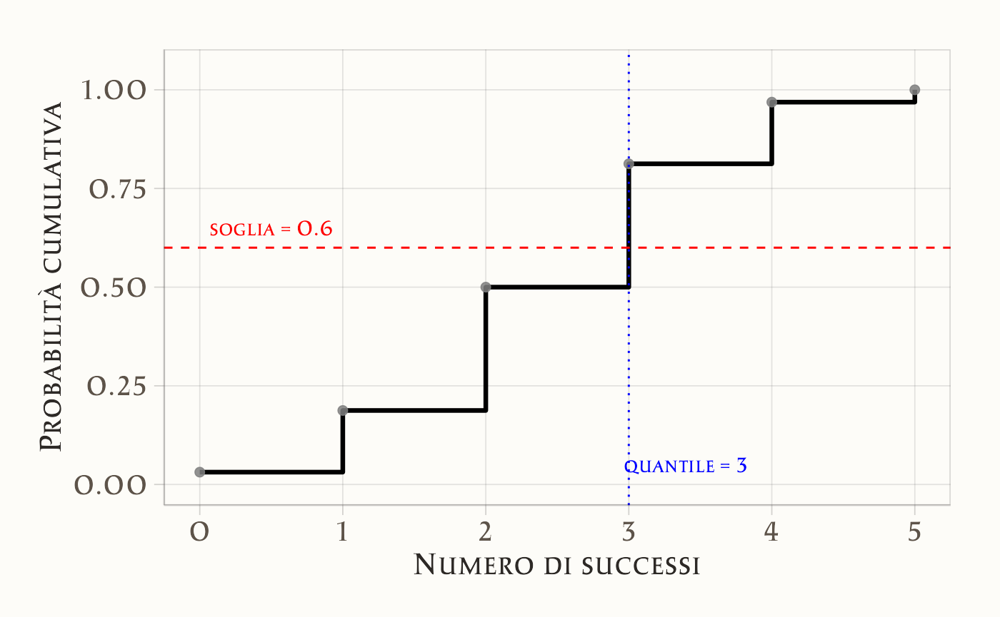
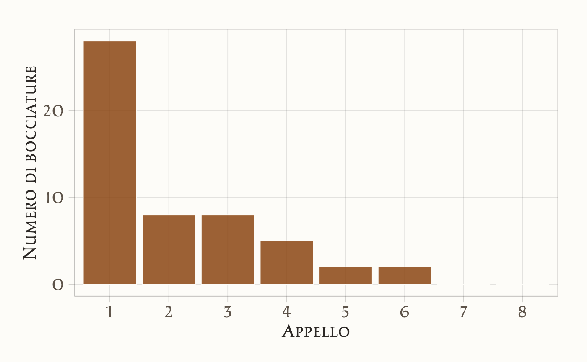

here::here("code", "_common.R") |>
source()
if (!requireNamespace("pacman")) install.packages("pacman")
pacman::p_load(reshape2)14 Distribuzioni di v.c. discrete
14.1 Introduzione
È importante distinguere tra variabili casuali discrete e continue, perché le distribuzioni di probabilità associate sono molto diverse nei due casi si veda il 7.
In questo capitolo ci focalizzeremo sulle distribuzioni di probabilità discrete, strumenti fondamentali per modellare fenomeni aleatori che generano un numero finito o numerabile di possibili esiti. Queste distribuzioni risultano particolarmente efficaci per descrivere eventi che si verificano in contesti discreti, come il numero di successi in un esperimento, l’occorrenza di un evento, o la selezione casuale da un insieme di opzioni finite.
14.1.1 Panoramica delle Distribuzioni Discrete
Di seguito, vengono presentate alcune delle principali distribuzioni discrete utilizzate in statistica e nella ricerca psicologica Ogni distribuzione è descritta in termini di caratteristiche fondamentali, applicazioni pratiche e importanza teorica.
14.1.1.1 Distribuzione Uniforme Discreta
- Descrizione: La distribuzione uniforme discreta rappresenta situazioni in cui tutti gli eventi all’interno di un insieme finito hanno la stessa probabilità di verificarsi.
-
Applicazioni: Si applica in contesti di scelta casuale equiprobabile, come:
- La selezione casuale di uno stimolo da una lista di parole in un esperimento di memoria.
- L’assegnazione casuale di partecipanti a gruppi sperimentali in uno studio di psicologia sociale.
- La scelta di un’immagine tra un insieme di stimoli visivi in una ricerca sull’attenzione.
- La probabilità uniforme che un partecipante scelga una delle opzioni in un questionario a risposte multiple, in assenza di preferenze o conoscenze specifiche.
-
Parametri:
- Intervallo di supporto: l’insieme finito di valori possibili (ad esempio, \(\{1, 2, \dots, k\}\)).
- Importanza: Funziona come modello di riferimento in situazioni di massima incertezza o mancanza di preferenze. È utile per definire un punto di partenza in analisi più complesse e per studiare comportamenti casuali.
14.1.1.2 Distribuzione di Bernoulli
- Descrizione: La distribuzione di Bernoulli modella esperimenti con due possibili esiti, generalmente etichettati come “successo” (con probabilità \(p\)) e “fallimento” (con probabilità \(1-p\)).
- Applicazioni: Si applica a situazioni binarie, come il lancio di una moneta (testa/croce), la risposta a domande dicotomiche (sì/no), o l’esito di un evento che può verificarsi o meno.
-
Parametro:
- \(p\): probabilità di successo.
- Importanza: Costituisce la base per molte altre distribuzioni discrete, come la distribuzione binomiale e geometrica. È fondamentale per comprendere fenomeni con esiti dichotomici.
14.1.1.3 Distribuzione Binomiale
- Descrizione: La distribuzione binomiale descrive il numero totale di successi in un numero fisso \(n\) di prove indipendenti, ciascuna governata da una distribuzione di Bernoulli con probabilità di successo \(p\).
-
Applicazioni: Viene utilizzata per analizzare processi ripetuti con esiti binari, ad esempio:
- Il numero di voti favorevoli in un campione di opinione.
- Il numero di sintomi osservati in un gruppo di pazienti.
- Il conteggio di errori in un test di accuratezza.
-
Parametri:
- \(n\): numero di prove.
- \(p\): probabilità di successo in ogni prova.
- Importanza: Fornisce uno strumento essenziale per modellare fenomeni ripetuti in condizioni identiche, consentendo analisi probabilistiche avanzate e previsioni statistiche.
14.1.1.4 Distribuzione di Poisson
- Descrizione: La distribuzione di Poisson modella il numero di eventi che si verificano in un intervallo fissato di tempo o spazio, quando tali eventi sono rari, indipendenti e accadono a un tasso medio costante \(\lambda\).
-
Applicazioni: Trova impiego in contesti dove gli eventi sono sporadici ma prevedibili, ad esempio:
- Il numero di episodi di ansia riportati in una settimana.
- Il numero di interazioni sociali spontanee di un bambino con disturbo dello spettro autistico durante una sessione di osservazione.
- La frequenza di lapsus verbali durante una presentazione pubblica.
- Il numero di sogni vividi riportati durante una serie di notti consecutive in uno studio sul sonno.
-
Parametro:
- \(\lambda\): tasso medio di eventi per unità di tempo o spazio.
- Importanza: È cruciale per analizzare fenomeni psicologici o comportamentali rari ma significativi. Aiuta a comprendere i meccanismi sottostanti e a modellare la variabilità osservata in contesti clinici, sperimentali o quotidiani.
In conclusione, le distribuzioni discrete sopra descritte rappresentano strumenti fondamentali per modellare una vasta gamma di fenomeni osservati in ambito scientifico, psicologico e applicativo. Ciascuna distribuzione offre una cornice teorica ben definita per interpretare e analizzare situazioni caratterizzate da variabili aleatorie discrete, fornendo così le basi per inferenze statistiche robuste e previsioni quantitative affidabili.
14.2 Distribuzioni in R
In R, per ogni distribuzione sono disponibili quattro funzioni principali, i cui nomi iniziano con le lettere:
-
d (density): per calcolare i valori teorici relativi alla distribuzione,
-
p (probability): per ottenere la probabilità cumulativa,
-
q (quantile): per determinare i quantili,
- r (random): per generare campioni casuali.
Il pacchetto di base stats include numerose funzioni dedicate alle principali distribuzioni statistiche, permettendo di calcolare valori teorici e simulare dati in modo semplice e flessibile. Per ulteriori dettagli sulle distribuzioni disponibili e sull’uso delle relative funzioni, è possibile consultare la documentazione con il comando ?Distributions.
14.3 Distribuzione Uniforme Discreta
La distribuzione uniforme discreta è una delle più semplici e intuitive distribuzioni di probabilità. È utilizzata per modellare situazioni in cui tutti gli esiti possibili sono ugualmente probabili. Si applica, ad esempio, quando si estrae un numero a caso da un insieme finito di interi senza alcuna preferenza.
Definizione 14.1 Sia \(X\) una variabile casuale che può assumere i valori interi da 1 a \(N\), tutti con la stessa probabilità. Allora diciamo che \(X\) ha una distribuzione uniforme discreta sull’intervallo \(\{1, 2, \dots, N\}\). In simboli:
\[ X \sim \text{Uniforme Discreta}(1, N) . \]
Poiché ci sono \(N\) valori possibili e ciascuno ha la stessa probabilità, ogni valore ha probabilità:
\[ P(X = x) = \frac{1}{N}, \quad \text{per } x \in \{1, 2, \dots, N\}. \]
14.3.1 Proprietà di normalizzazione
La somma delle probabilità di tutti gli esiti deve essere pari a 1:
\[ \sum_{x = 1}^{N} P(X = x) = \sum_{x = 1}^{N} \frac{1}{N} = \frac{1}{N} \cdot N = 1. \]
Questa è una proprietà fondamentale di ogni distribuzione di probabilità.
14.3.2 Valore atteso
Il valore atteso (o media) ci dice qual è il risultato medio atteso nel lungo periodo. Si calcola come:
\[ \mathbb{E}(X) = \sum_{x = 1}^{N} x \cdot P(X = x) = \frac{1}{N} \sum_{x = 1}^{N} x. \]
La somma dei primi \(N\) numeri naturali è:
\[ \sum_{x = 1}^{N} x = \frac{N(N + 1)}{2}. \]
Quindi:
\[ \mathbb{E}(X) = \frac{1}{N} \cdot \frac{N(N + 1)}{2} = \frac{N + 1}{2}. \]
In conclusione, il valore atteso di una variabile uniforme discreta su \(\{1, \dots, N\}\) è \(\frac{N + 1}{2}\).
14.3.3 Varianza
La varianza della distribuzione uniforme discreta è:
\[ \mathbb{V}(X) = \frac{(N + 1)(N - 1)}{12}. \]
In sintesi, per una variabile casuale \(X\) uniformemente distribuita su \(\{1, 2, \dots, N\}\):
| Proprietà | Formula |
|---|---|
| Media | \(\mathbb{E}(X) = \dfrac{N + 1}{2}\) |
| Varianza | \(\mathbb{V}(X) = \dfrac{(N + 1)(N - 1)}{12}\) |
Questa distribuzione è utile ogni volta che non c’è alcuna ragione per preferire un valore a un altro all’interno di un insieme finito di numeri interi.
Esempio 14.1 Supponiamo che \(X\) sia una variabile casuale con distribuzione uniforme discreta tra 1 e 10, ovvero:
\[ X \sim \text{Uniforme Discreta}(1, 10) . \]
Vogliamo:
- generare un grande campione casuale,
- calcolare la media e la varianza osservate,
- confrontarle con i valori teorici.
Codice R.
set.seed(123) # Per rendere la simulazione riproducibile
# Parametro N
N <- 10
# Simulazione: 100.000 osservazioni dalla distribuzione uniforme discreta
x <- sample(1:N, size = 100000, replace = TRUE)
# Media e varianza empiriche
media_empirica <- mean(x)
varianza_empirica <- var(x)
# Valori teorici
media_teorica <- (N + 1) / 2
varianza_teorica <- ((N + 1) * (N - 1)) / 12
# Risultati
tibble(
`Media empirica` = media_empirica,
`Media teorica` = media_teorica,
`Varianza empirica` = varianza_empirica,
`Varianza teorica` = varianza_teorica
)
#> # A tibble: 1 × 4
#> `Media empirica` `Media teorica` `Varianza empirica` `Varianza teorica`
#> <dbl> <dbl> <dbl> <dbl>
#> 1 5.51 5.5 8.26 8.25Con un campione molto grande, le statistiche empiriche (cioè calcolate dai dati simulati) saranno molto vicine ai valori teorici:
| Valore | |
|---|---|
| Media teorica | 5.5 |
| Media empirica | ≈ 5.5 |
| Varianza teorica | 8.25 |
| Varianza empirica | ≈ 8.25 |
In sintesi, a simulazione conferma che:
- la media empirica converge verso \(\mathbb{E}(X) = \frac{N + 1}{2}\),
- la varianza empirica converge verso \(\mathbb{V}(X) = \frac{(N + 1)(N - 1)}{12}\).
14.4 Distribuzione di Bernoulli
In statistica, un esperimento che ammette solo due esiti possibili è modellato attraverso quella che viene chiamata “prova Bernoulliana”. Un esempio tipico è il lancio di una moneta, che può dare come risultato testa o croce.
Definizione 14.2 Una variabile casuale \(X\) che assume valori in \(\{0, 1\}\) è detta variabile di Bernoulli. La sua distribuzione di probabilità è definita come:
\[ P(X \mid \theta) = \begin{cases} p & \text{se $X = 1$ (successo)}, \\ 1 - p & \text{se $X = 0$ (insuccesso)}, \end{cases} \]
dove \(0 \leq p \leq 1\). Il parametro \(p\) rappresenta la probabilità del “successo” (\(X = 1\)), mentre \(1 - p\) è la probabilità dell’“insuccesso” (\(X = 0\)).
La distribuzione di Bernoulli descrive quindi un contesto in cui la probabilità di osservare l’esito 1 è \(p\) e quella di osservare l’esito 0 è \(1 - p\). Viene utilizzata per modellare situazioni binarie, come una risposta “sì” o “no”, oppure un “successo” o “insuccesso”.
Calcolando il valore atteso e la varianza, otteniamo:
\[ \begin{aligned} \mathbb{E}(X) &= 0 \cdot P(X=0) + 1 \cdot P(X=1) = p, \\ \mathbb{V}(X) &= (0 - p)^2 \cdot P(X=0) + (1 - p)^2 \cdot P(X=1) = p(1-p). \end{aligned} \tag{14.1}\]
Tale risultato mostra come la varianza massima si ottenga per \(p = 0.5\), condizione che corrisponde alla massima incertezza intrinseca nel processo, ossia quando la probabilità di successo eguaglia quella di insuccesso.
# Valori di p tra 0 e 1
p <- seq(0, 1, length.out = 100)
variance <- p * (1 - p)
data <- data.frame(p = p, Variance = variance)
# Creazione del grafico
ggplot(data, aes(x = p, y = Variance)) +
geom_line(linewidth = 1.2) +
labs(
x = expression(p),
y = "Varianza"
)
14.4.1 Notazione
Per indicare che la variabile casuale \(X\) segue una distribuzione Bernoulliana di parametro \(p\) Utilizziamo la notazione \(X \sim \mathcal{Bern}(p)\), o in maniera equivalente \(\mathcal{Bern}(X \mid p)\).
Esempio 14.2 Nel caso del lancio di una moneta equilibrata, la variabile di Bernoulli assume i valori \(0\) e \(1\) con uguale probabilità di \(\frac{1}{2}\). Pertanto, la funzione di massa di probabilità assegna una probabilità di \(\frac{1}{2}\) sia per \(X = 0\) che per \(X = 1\), mentre la funzione di distribuzione cumulativa risulta essere \(\frac{1}{2}\) per \(X = 0\) e \(1\) per \(X = 1\).
Generiamo dei valori casuali dalla distribuzione di Bernoulli. Iniziamo con un singolo valore:
14.5 Distribuzione Binomiale
La distribuzione binomiale è una distribuzione di probabilità discreta che modella il numero di successi \(y\) in un numero fissato \(n\) di prove di Bernoulli indipendenti e identiche, dove ciascuna prova ha solo due esiti possibili: “successo” (rappresentato da “1”) con probabilità \(p\) o “insuccesso” (rappresentato da “0”) con probabilità \(1 - p\). La notazione utilizzata è la seguente:
\[ Y \sim \mathcal{Binom}(n, p). \]
Definizione 14.3 La distribuzione binomiale descrive la probabilità di osservare esattamente \(y\) successi in \(n\) prove di Bernoulli indipendenti:
\[ P(Y = y) = \binom{n}{y} p^{y} (1 - p)^{n - y} = \frac{n!}{y!(n - y)!} p^{y} (1 - p)^{n - y}, \tag{14.2}\]
dove \(\binom{n}{y}\), noto come coefficiente binomiale, rappresenta il numero di modi possibili per ottenere \(y\) successi in \(n\) prove, e \(p\) è la probabilità di successo in ciascuna prova.
La distribuzione binomiale si presta bene a esempi classici come il lancio ripetuto di una moneta o l’estrazione di biglie da un’urna. Ad esempio, nel caso del lancio di una moneta, questa distribuzione descrive la probabilità di ottenere un determinato numero di “teste” in un certo numero di lanci, con ogni lancio che segue una distribuzione di Bernoulli con probabilità di successo \(p\).
Una caratteristica interessante della distribuzione binomiale è la sua proprietà di riproducibilità: se due variabili casuali indipendenti, \(y_1\) e \(y_2\), seguono entrambe distribuzioni binomiali con lo stesso parametro \(p\), ma con un diverso numero di prove (\(n_1\) e \(n_2\)), la loro somma, \(y = y_1 + y_2\), sarà ancora distribuita binomialmente, con parametri \(n_1 + n_2\) e \(p\).
14.5.1 Caso particolare \(n = 1\)
Ora consideriamo il caso particolare in cui \(n = 1\). Quando \(n = 1\), il coefficiente binomiale diventa:
\[ \binom{1}{y} = \frac{1!}{y! (1-y)!}. \]
Espandiamo i fattoriali per i due possibili valori di \(y\), che può assumere solo 0 o 1 (poiché \(y \in \{0, 1, \dots, n\}\)).
Caso 1: \(y = 0\)
\[ \binom{1}{0} = \frac{1!}{0! (1-0)!} = \frac{1}{1 \cdot 1} = 1. \]
Quindi, per \(y = 0\): \[ P(Y = 0) = \binom{1}{0} p^0 (1-p)^{1-0} = 1 \cdot 1 \cdot (1-p) = 1-p. \]
Caso 2: \(y = 1\)
\[ \binom{1}{1} = \frac{1!}{1! (1-1)!} = \frac{1}{1 \cdot 1} = 1. \]
Quindi, per \(y = 1\): \[ P(Y = 1) = \binom{1}{1} p^1 (1-p)^{1-1} = 1 \cdot p \cdot 1 = p. \]
In conclusione, la PMF per la distribuzione binomiale con \(n = 1\) diventa:
\[ P(Y = y) = \begin{cases} 1-p, & \text{se } y = 0, \\ p, & \text{se } y = 1. \end{cases} \]
Questa è esattamente la PMF della distribuzione di Bernoulli con parametro \(p\):
\[ P(Y = y) = p^y (1-p)^{1-y}, \quad y \in \{0, 1\}. \]
Pertanto, la distribuzione binomiale con \(n = 1\) è equivalente alla distribuzione di Bernoulli con parametro \(p\).
14.5.2 Applicazioni Pratiche della Distribuzione Binomiale
Per illustrare l’applicazione della distribuzione binomiale, consideriamo un esempio semplice. Supponiamo di osservare 2 successi su 4 prove di Bernoulli, dove la probabilità di successo in ogni prova è \(p = 0.2\). La probabilità di ottenere esattamente questo risultato si calcola con la formula:
\[ P(Y = 2) = \binom{4}{2} \cdot 0.2^2 \cdot (1 - 0.2)^{2} = 0.1536. \]
In R, questo calcolo si può fare in modo diretto:
In alternativa, possiamo usare la funzione dbinom() per ottenere la stessa probabilità:
14.5.2.1 Visualizzazione della distribuzione di probabilità
Possiamo rappresentare graficamente la distribuzione di massa di probabilità per tutti i possibili valori di \(y\) da \(0\) a \(n\):
y <- 0:n
probabilities <- dbinom(y, size = n, prob = p)
df <- data.frame(Successi = y, Probabilità = probabilities)
df |>
ggplot(aes(x = Successi, y = Probabilità)) +
geom_segment(
aes(xend = Successi, yend = 0), lwd = 1.2
) +
geom_point(size = 3) +
labs(
x = "Numero di successi y",
y = "Probabilità"
)
14.5.2.2 Generazione di un campione casuale
La funzione rbinom() permette di generare un campione casuale da una distribuzione binomiale:
14.5.2.3 Variazione della distribuzione al variare di \(p\)
Per esplorare l’effetto di diversi valori di \(p\) sulla forma della distribuzione, possiamo visualizzare più curve binomiali per \(n = 20\) e \(p\) variabile:
n <- 20
p_values <- seq(0.3, 0.9, by = 0.3)
y <- 0:25
df <- data.frame()
for (p in p_values) {
binom_dist <- dbinom(y, size = n, prob = p)
df <- rbind(df, data.frame(y = y, Prob = binom_dist, p = factor(p)))
}
df |>
ggplot(aes(x = y, y = Prob, color = p)) +
geom_point() +
geom_line() +
labs(
x = "Numero di successi y",
y = "Probabilità",
color = expression(p)
)14.5.2.4 Funzione di ripartizione cumulativa
Possiamo anche rappresentare la funzione di distribuzione cumulativa (CDF) per \(n = 5\) e \(p = 0.5\):
n <- 5
p <- 0.5
y <- 0:n
cdf_values <- pbinom(y, size = n, prob = p)
df <- data.frame(y = y, cdf = cdf_values)
df |>
ggplot(aes(x = y, y = cdf)) +
geom_line() +
geom_point() +
geom_hline(
yintercept = 1, linetype = "dashed", color = "black", alpha = 0.7
) +
labs(
x = "Numero di successi y",
y = "Probabilità cumulativa"
)
Esempio 14.3 Supponiamo di lanciare una moneta equa (cioè con probabilità \(p = 0.5\) di ottenere testa) 5 volte. Vogliamo calcolare la probabilità di ottenere almeno 2 teste, ovvero:
\[ P(Y \geq 2) = P(Y = 2) + P(Y = 3) + P(Y = 4) + P(Y = 5). \]
Possiamo sommare direttamente queste probabilità usando dbinom():
Un modo alternativo, più efficiente, consiste nel calcolare il complemento della probabilità di ottenere meno di 2 teste (cioè 0 o 1):
\[ P(Y \geq 2) = 1 - P(Y \leq 1) \]
In R, possiamo usare la funzione pbinom() per calcolare questa probabilità cumulativa:
Entrambi i metodi restituiscono lo stesso risultato numerico, ma il secondo è spesso preferibile quando \(n\) è grande o quando si vuole calcolare una probabilità di coda.
14.5.2.5 Quantili di una distribuzione binomiale
Hai perfettamente ragione — grazie per l’osservazione!
Infatti, con i parametri size = 5, prob = 0.5 e target_probability = 0.60, la funzione qbinom() restituisce 3, non 2. Questo perché qbinom() restituisce il più piccolo valore di \(y\) tale che \(P(Y \leq y) \geq p\). Verifichiamolo in R:
Quindi:
- \(P(Y \leq 2) = 0.5\) → troppo poco
- \(P(Y \leq 3) = 0.8125\) → supera il 60%
Pertanto, qbinom(0.6, 5, 0.5) restituisce 3.
14.5.2.6 Quantili di una distribuzione binomiale
La funzione qbinom() permette di calcolare il quantile di una distribuzione binomiale, cioè il numero minimo di successi \(y\) tale che la probabilità cumulativa \(P(Y \leq y)\) sia maggiore o uguale a una certa soglia.
Ad esempio, supponiamo di voler sapere qual è il numero minimo di successi tale che la probabilità cumulativa sia almeno 60%. Possiamo usare:
Il risultato è 3, il che significa che:
\[ P(Y \leq 3) = 0.8125 \geq 0.60, \]
mentre
\[ P(Y \leq 2) = 0.5 < 0.60. \]
Quindi, servono almeno 3 successi per superare la soglia del 60% di probabilità cumulativa.
🔎
qbinom(p, size, prob)restituisce il più piccolo valore di \(y\) tale che \(P(Y \leq y) \geq p\).
14.5.2.7 Rappresentazione grafica del quantile
Per visualizzare il comportamento della funzione di ripartizione cumulativa e individuare il quantile per \(p = 0.60\), possiamo usare il seguente codice in R:
# Parametri
n <- 5
p <- 0.5
target_probability <- 0.60
# Asse y: numero di successi
y <- 0:n
# Calcolo dei valori cumulativi
cdf <- pbinom(y, size = n, prob = p)
# Calcolo del quantile
q <- qbinom(target_probability, size = n, prob = p)
# Data frame
df <- data.frame(Successi = y, CDF = cdf)
# Grafico
df |>
ggplot(aes(x = Successi, y = CDF)) +
geom_step(direction = "hv", linewidth = 1.1) +
geom_point(size = 2) +
geom_hline(
yintercept = target_probability, linetype = "dashed", color = "red"
) +
geom_vline(xintercept = q, linetype = "dotted", color = "blue") +
annotate(
"text",
x = q + 0.4, y = 0.05, label = paste("quantile =", q),
color = "blue"
) +
annotate(
"text",
x = 0.5, y = target_probability + 0.05,
label = paste("soglia =", target_probability), color = "red"
) +
labs(
x = "Numero di successi",
y = "Probabilità cumulativa"
) +
ylim(0, 1.05)
In questo grafico:
- la linea rossa tratteggiata rappresenta la soglia di probabilità desiderata (es. 0.60);
- la linea blu tratteggiata verticale indica il quantile corrispondente, cioè il più piccolo valore di \(y\) per cui \(P(Y \leq y) \geq 0.60\);
- il valore calcolato è
3, quindi con al massimo 3 successi, la probabilità cumulativa supera il 60%.
Esempio 14.4 Consideriamo una distribuzione binomiale con \(n = 10\) prove e probabilità di successo \(p = 0.2\). Supponiamo di voler calcolare la probabilità di ottenere al massimo 4 successi. In termini matematici, vogliamo calcolare:
\[ P(Y \leq 4) . \]
In R, questo si ottiene con la funzione pbinom():
Il risultato indica che c’è circa l’97% di probabilità di ottenere 4 o meno successi su 10 prove, quando la probabilità di successo in ciascuna prova è 0.2.
Ora facciamo il passaggio inverso: immaginiamo di conoscere la probabilità cumulativa (per esempio, 0.97) e vogliamo sapere quanti successi bisogna considerare per raggiungere quella probabilità.
Per questo usiamo la funzione qbinom(), che ci restituisce il più piccolo numero di successi \(y\) tale che \(P(Y \leq y) \geq\) quella probabilità:
Il valore ottenuto sarà 4, cioè il minimo numero di successi per cui la probabilità cumulativa è almeno il 97%.
Riepilogo concetti chiave:
-
pbinom(y, n, p)calcola la probabilità di ottenere al massimo \(y\) successi; -
qbinom(prob, n, p)calcola il numero minimo di successi necessari per raggiungere almeno quella probabilità.
In sintesi, pbinom() e qbinom() sono strumenti complementari: pbinom ci dà la probabilità di ottenere fino a un certo numero di successi, mentre qbinom ci dice fino a quanti successi possiamo ottenere per raggiungere una certa probabilità. Nell’analisi di una distribuzione binomiale (e di molte altre distribuzioni) queste funzioni aiutano a calcolare e interpretare facilmente probabilità cumulate e quantili in R, rendendo più semplice l’analisi di eventi aleatori.
14.5.3 Valore atteso e deviazione standard nella distribuzione binomiale
Nella distribuzione binomiale, possiamo calcolare facilmente due quantità molto importanti:
- il valore atteso (o media), che ci dice quanti successi ci aspettiamo in media su un certo numero di prove;
- la deviazione standard, che ci dice quanto i risultati tendono a variare attorno alla media.
Le formule sono le seguenti:
\[ \text{Media (valore atteso):} \quad \mu = n p , \tag{14.3}\]
\[ \text{Deviazione standard:} \quad \sigma = \sqrt{n p (1 - p)} , \tag{14.4}\]
dove:
- \(n\) è il numero di prove (per esempio, il numero di lanci di una moneta),
- \(p\) è la probabilità di successo in ogni prova.
Esempio 14.5 Supponiamo di lanciare 4 volte una moneta truccata che ha una probabilità di successo (es. ottenere testa) pari a \(p = 0.2\).
Vogliamo calcolare:
- la media attesa del numero di teste,
- la varianza,
- e la deviazione standard.
- Calcolo del valore atteso (media):
\[ \mu = n \cdot p = 4 \cdot 0.2 = 0.8 . \]
Quindi, in media, ci aspettiamo di ottenere 0.8 teste ogni 4 lanci (cioè meno di 1, ma ricordiamo che si tratta di una media).
- Calcolo della varianza:
\[ \text{Varianza} = n \cdot p \cdot (1 - p) = 4 \cdot 0.2 \cdot 0.8 = 0.64 . \]
- Calcolo della deviazione standard:
\[ \sigma = \sqrt{0.64} \approx 0.8 . \]
La deviazione standard ci dà un’idea della variabilità dei risultati: in questo caso, i valori osservati (numero di teste su 4 lanci) si discostano dalla media di circa 0.8 in media.
14.5.4 Verifica con una simulazione in R
Per vedere se i calcoli teorici dell’Esempio 14.5 funzionano anche nella pratica, possiamo simulare l’esperimento in R: lanciamo 4 monete, ma lo facciamo tantissime volte (ad esempio 1 milione) e calcoliamo la media e la varianza dei risultati ottenuti.
Come possiamo vedere, i risultati ottenuti dalla simulazione sono molto vicini ai valori teorici: la media è circa \(\mu = 0.8\) e la varianza circa \(0.64\), proprio come previsto dalle formule.
Questo non solo conferma che le formule per media e varianza nella distribuzione binomiale sono corrette, ma ci aiuta anche a capire meglio cosa significano:
- il valore atteso rappresenta la media dei risultati se ripetiamo l’esperimento moltissime volte;
- la varianza (e la sua radice quadrata, la deviazione standard) misura quanto i risultati si allontanano dalla media.
La simulazione mostra quindi in modo concreto che il valore atteso e la varianza descrivono il comportamento “medio” della variabile aleatoria, quando viene osservata in un numero molto grande di situazioni. In altre parole, questi concetti non sono solo teorici: ci dicono cosa aspettarci nella pratica, se ripetiamo molte volte lo stesso esperimento.
14.6 Funzioni R per le distribuzioni di probabilità
In R, le distribuzioni di probabilità (sia discrete che continue) sono gestite in modo sistematico. Per ogni distribuzione, esistono quattro funzioni principali, ognuna con un prefisso diverso che indica il tipo di operazione desiderata:
-
d*: calcola la densità (per distribuzioni continue) o la probabilità (per distribuzioni discrete);
-
p*: calcola la funzione di ripartizione cumulativa (CDF), cioè \(P(Y \leq y)\);
-
q*: calcola la funzione quantile (inversa della CDF);
-
r*: genera valori casuali secondo la distribuzione specificata.
Questa struttura è identica per tutte le distribuzioni implementate in R. La tabella seguente mostra un confronto tra le funzioni disponibili per due distribuzioni fondamentali: la binomiale (discreta) e la normale (continua).
| Tipo di funzione | Binomiale (\(Y \sim \text{Bin}(n, p)\)) | Normale (\(Y \sim \mathcal{N}(\mu, \sigma)\)) |
|---|---|---|
| Densità o probabilità esatta | dbinom(y, size = n, prob = p) |
dnorm(y, mean = mu, sd = sigma) |
| \(P(Y = y)\) | dbinom(...) |
❌ Non definita: per variabili continue si usa la densità |
| Probabilità cumulativa | pbinom(y, size = n, prob = p) |
pnorm(y, mean = mu, sd = sigma) |
| \(P(Y \geq y)\) | 1 - pbinom(y - 1, ...) |
1 - pnorm(y, ...) |
| \(P(y_1 < Y < y_2)\) | pbinom(y2, ...) - pbinom(y1, ...) |
pnorm(y2, ...) - pnorm(y1, ...) |
| Quantile (inversa della CDF) | qbinom(q, size = n, prob = p) |
qnorm(q, mean = mu, sd = sigma) |
| Simulazione di dati casuali | rbinom(n, size = trials, prob = p) |
rnorm(n, mean = mu, sd = sigma) |
Esempio 14.6
- Calcolare la probabilità di esattamente \(y = 3\) successi su \(n = 5\) prove con \(p = 0.5\):
dbinom(3, size = 5, prob = 0.5)
#> [1] 0.312- Calcolare la probabilità cumulativa \(P(Y \leq 3)\):
pbinom(3, size = 5, prob = 0.5)
#> [1] 0.812- Calcolare il valore minimo \(y\) tale che \(P(Y \leq y) \geq 0.9\):
qbinom(0.9, size = 5, prob = 0.5)
#> [1] 4- Generare un campione di 100 numeri casuali da una distribuzione binomiale:
rbinom(100, size = 5, prob = 0.5)
#> [1] 2 2 4 1 3 2 3 2 2 2 3 3 3 3 1 4 1 1 0 2 2 2 4 1 2 3 3 1 5 2 3 3 0 3 2 3 4
#> [38] 2 3 3 3 3 1 5 3 3 2 3 1 2 1 3 3 2 2 4 1 4 2 3 1 4 2 2 3 4 1 1 4 2 3 2 3 3
#> [75] 3 1 4 4 3 3 4 3 3 3 2 2 3 3 2 4 4 3 2 2 0 3 1 3 1 214.7 Distribuzione di Poisson
La distribuzione di Poisson è utilizzata per modellare il numero di eventi che si verificano in un determinato intervallo di tempo o spazio, con eventi indipendenti e un tasso costante di occorrenza.
La funzione di massa di probabilità (PMF) è data da:
\[ P(Y = y \mid \lambda) = \frac{\lambda^y \cdot e^{-\lambda}}{y!}, \quad y = 0, 1, 2, \ldots \]
dove \(\lambda\) rappresenta il tasso medio di eventi e \(y\) è il numero di eventi.
La distribuzione di Poisson può essere derivata come il limite di una distribuzione binomiale quando il numero di prove, \(n\), tende all’infinito e la probabilità di successo in ciascuna prova, \(p\), tende a zero, in modo tale che \(np = \lambda\).
14.7.1 Proprietà principali
- Media: \(\mathbb{E}[Y] = \lambda\)
- Varianza: \(\text{Var}(Y) = \lambda\)
Di seguito, presentiamo esempi di calcolo e simulazione con R.
14.7.2 Grafico della distribuzione di Poisson con \(\lambda = 2\)
# Parametro lambda
lambda <- 2
# Valori di y (numero di eventi)
y <- 0:10
# Calcolo delle probabilità
probabilities <- dpois(y, lambda = lambda)
# Creazione di un dataframe per ggplot
data <- data.frame(
Numero_eventi = y,
Probabilita = probabilities
)
# Grafico della funzione di massa di probabilità
ggplot(data, aes(x = Numero_eventi, y = Probabilita)) +
geom_col() +
labs(
x = "Numero di eventi (k)",
y = "Probabilità"
) 14.7.3 Calcolo della probabilità per un numero specifico di eventi
Per calcolare la probabilità di osservare esattamente 3 eventi con \(\lambda = 2\):
14.7.4 Calcolo della probabilità cumulativa \(P(Y \leq 3)\)
Per calcolare \(P(Y \leq 3)\), la probabilità cumulativa:
14.7.5 Trovare il quantile corrispondente a una probabilità data
Per trovare il numero massimo di eventi per cui la probabilità cumulativa è al massimo \(0.8125\):
14.7.6 Generazione di numeri casuali
Per generare un campione di 1.000.000 di osservazioni da una distribuzione di Poisson con \(\lambda = 2\):
Esempio 14.7 Un esempio classico dell’uso della distribuzione di Poisson viene dalla Seconda Guerra Mondiale.
Il contesto storico. Tra il 1944 e il 1945, Londra fu colpita da centinaia di missili V1 e V2 lanciati dalla Germania nazista. Le autorità britanniche si chiesero se i bombardamenti seguissero una strategia mirata: i missili venivano forse lanciati intenzionalmente su certi quartieri? O si trattava invece di un comportamento casuale, come se fossero stati distribuiti a caso?
Per rispondere a questa domanda, il Ministero della Guerra britannico divise Londra in 576 aree di uguale superficie (ogni area misurava 0.25 km²) e registrò quanti missili avevano colpito ciascuna area. I dati furono poi analizzati dal matematico R. D. Clarke, che li pubblicò nel 1946.
I dati osservati. Ecco una sintesi della distribuzione osservata:
| Missili per area | Numero di aree | Frequenza relativa |
|---|---|---|
| 0 | 229 | 0.398 |
| 1 | 211 | 0.367 |
| 2 | 93 | 0.161 |
| 3 | 35 | 0.061 |
| 4 | 7 | 0.012 |
| ≥5 | 1 | 0.002 |
Il numero medio di missili per area era \(\lambda \approx 0.93\). L’idea era confrontare queste frequenze con le probabilità teoriche previste da una distribuzione di Poisson con media \(\lambda = 0.93\).
Interpretazione con la distribuzione di Poisson. Utilizzando la funzione dpois() in R, possiamo calcolare le probabilità teoriche per ciascun valore osservato, da 0 a 4 missili per area (valori superiori sono troppo rari per essere trattati separatamente).
# Parametro medio osservato
lambda <- 0.93
# Valori possibili di missili per area
y <- 0:4
# Probabilità teoriche secondo la distribuzione di Poisson
prob_teoriche <- dpois(y, lambda = lambda)
# Aggiungiamo la probabilità per y >= 5
prob_teoriche <- c(prob_teoriche, 1 - sum(prob_teoriche)) # y >= 5
# Visualizziamo
data.frame(
Missili_per_area = c(0:4, ">=5"),
Probabilita_teorica = round(prob_teoriche, 3)
)
#> Missili_per_area Probabilita_teorica
#> 1 0 0.395
#> 2 1 0.367
#> 3 2 0.171
#> 4 3 0.053
#> 5 4 0.012
#> 6 >=5 0.003Confrontando le probabilità teoriche della Poisson con quelle osservate nei dati reali, i risultati erano sorprendentemente simili. Questo suggeriva che i missili non erano lanciati su bersagli specifici, ma seguivano un comportamento statisticamente compatibile con una distribuzione casuale.
# Frequenze osservate (dati originali di Clarke, 1946)
frequenze_osservate <- c(229, 211, 93, 35, 7, 1)
valori_missili <- c(0, 1, 2, 3, 4, "≥5")
# Calcolo frequenze teoriche con Poisson (lambda = 0.93)
lambda <- 0.93
prob_teoriche <- dpois(0:4, lambda)
prob_teoriche <- c(prob_teoriche, 1 - sum(prob_teoriche)) # Per y >= 5
# Numero totale di aree (come somma delle osservazioni)
n_aree <- sum(frequenze_osservate)
# Frequenze attese = probabilità teoriche * numero totale di aree
frequenze_attese <- round(prob_teoriche * n_aree)
# Costruzione del data frame
df <- data.frame(
Missili_per_area = factor(valori_missili, levels = c("0", "1", "2", "3", "4", "≥5")),
Osservate = frequenze_osservate,
Attese = frequenze_attese
)
# Conversione in formato lungo per ggplot2
df_long <- reshape2::melt(df, id.vars = "Missili_per_area", variable.name = "Tipo", value.name = "Frequenza")
# Creazione del grafico
ggplot(df_long, aes(x = Missili_per_area, y = Frequenza, fill = Tipo)) +
geom_bar(stat = "identity", position = "dodge") +
labs(
x = "Numero di missili per area",
y = "Numero di aree",
fill = "Frequenza"
) - Le barre blu rappresentano le frequenze osservate (quante aree hanno ricevuto 0, 1, 2… missili).
- Le barre rosse mostrano le frequenze attese se i missili fossero stati lanciati in modo completamente casuale, seguendo una distribuzione di Poisson con \(\lambda = 0.93\).
La sovrapposizione tra i due andamenti è molto buona, il che rafforza l’idea che i bombardamenti fossero distribuiti casualmente — senza un pattern strategico apparente.
Cosa ci insegna questo esempio?
- La distribuzione di Poisson è adatta quando vogliamo modellare eventi rari e indipendenti nello spazio o nel tempo.
- I dati dei missili su Londra mostrano come un fenomeno che a prima vista potrebbe sembrare non casuale (per via della concentrazione locale degli eventi) possa invece essere ben descritto da un modello probabilistico semplice, se considerato su una scala adatta.
Esempio 14.8 Supponiamo di avere osservato, nel corso degli anni, che la frequenza relativa di bocciature all’esame di Psicometria è di circa 10% (cioè \(p = 0.1\)). Tuttavia, il numero di studenti iscritti a ciascun appello varia in modo estremo: al primo appello dell’anno partecipano più di 200 studenti, mentre negli ultimi appelli solo 2 o 3.
Questo rende inadeguato l’uso della distribuzione binomiale, che richiede un numero di prove (\(n\)) fisso o noto per ciascun appello.
In questi casi, possiamo modellare il numero di bocciature per appello usando una distribuzione di Poisson.
Per ogni appello, possiamo stimare \(\lambda\) moltiplicando il numero di studenti iscritti (\(n\)) per la frequenza attesa di bocciature (\(p = 0.1\)). A quel punto, il numero di bocciature osservate può essere approssimato da:
\[ Y \sim \text{Poisson}(\lambda = n \cdot p) . \]
Quindi la distribuzione cambia da appello ad appello, perché \(\lambda\) cambia con \(n\), ma il modello rimane Poissoniano.
Supponiamo di avere osservato i seguenti dati.
| Appello | Numero iscritti (\(n\)) | \(\lambda = n \cdot p\) | Distribuzione di bocciature |
|---|---|---|---|
| 1 | 220 | \(220 \cdot 0.1 = 22\) | \(Y \sim \text{Poisson}(22)\) |
| 2 | 95 | \(95 \cdot 0.1 = 9.5\) | \(Y \sim \text{Poisson}(9.5)\) |
| 8 | 3 | \(3 \cdot 0.1 = 0.3\) | \(Y \sim \text{Poisson}(0.3)\) |
Per ogni appello, possiamo usare la funzione dpois() in R per calcolare la probabilità di osservare un certo numero di bocciature, dato il valore di \(\lambda\) specifico per quell’appello.
Ad esempio, possiamo chiederci quale sia la probabilità che, nel secondo appello (95 iscritti), si registrino esattamente 8 bocciature.
lambda <- 95 * 0.1 # = 9.5
dpois(8, lambda = lambda)
#> [1] 0.123Questa funzione calcola \(P(Y = 8)\) per una variabile \(Y \sim \text{Poisson}(9.5)\), cioè la probabilità di osservare esattamente 8 bocciature su 95 iscritti.
Supponiamo di voler simulare il numero di bocciature in 8 appelli con numeri di iscritti variabili. Possiamo fare così:
set.seed(42)
# Numero iscritti per ciascun appello
n_iscritti <- c(220, 95, 60, 45, 20, 12, 6, 3)
# Probabilità storica di bocciatura
p <- 0.1
# Parametri lambda per ogni appello
lambda <- n_iscritti * p
# Simulazione delle bocciature per ciascun appello
bocciature <- rpois(length(lambda), lambda = lambda)
data.frame(
Appello = 1:8,
Iscritti = n_iscritti,
Lambda = lambda,
Bocciature = bocciature
)
#> Appello Iscritti Lambda Bocciature
#> 1 1 220 22.0 28
#> 2 2 95 9.5 8
#> 3 3 60 6.0 8
#> 4 4 45 4.5 5
#> 5 5 20 2.0 2
#> 6 6 12 1.2 2
#> 7 7 6 0.6 0
#> 8 8 3 0.3 0📈 Visualizzazione.
df <- data.frame(Appello = factor(1:8), Bocciature = bocciature)
ggplot(df, aes(x = Appello, y = Bocciature)) +
geom_col() +
labs(
x = "Appello",
y = "Numero di bocciature"
)
In sintesi,
- quando il numero di studenti iscritti a un appello non è noto a priori o varia fortemente, non è adeguato usare la distribuzione binomiale;
- se conosciamo la frequenza relativa di bocciature (es. \(p = 0.1\)), possiamo usare la distribuzione di Poisson con \(\lambda = n \cdot p\), adattandola a ciascun appello;
- questo approccio è particolarmente utile per fare stima e simulazione del numero di bocciature attese, senza dover modellare tutti i singoli esiti.
Esempio 14.9 Uno degli esempi più comuni per introdurre la distribuzione di Poisson riguarda il numero di nascite giornaliere in un ospedale.
Supponiamo che, in un grande ospedale, la media storica sia di 4.5 nascite al giorno. Possiamo allora descrivere il numero di nascite in un giorno con una variabile casuale Poisson con parametro \(\lambda = 4.5\):
\[ Y \sim \text{Poisson}(\lambda = 4.5) . \]
Ci chiediamo, ad esempio: qual è la probabilità che in un giorno nascano esattamente 6 bambini?
Possiamo calcolarla con la funzione dpois():
Questo valore rappresenta la probabilità che, in un giorno qualsiasi, si verifichino esattamente 6 nascite.
Simulazione. Simuliamo ora il numero di nascite in 365 giorni consecutivi, supponendo che la media rimanga costante a 4.5:
Questo ci dice, tra i 365 giorni simulati, quanta parte dell’anno ha avuto esattamente 6 nascite. Il valore ottenuto può essere confrontato con la probabilità teorica calcolata prima.
Visualizzazione. Possiamo rappresentiamo graficamente i dati simulati con un istogramma:
# Costruzione del data frame
data <- data.frame(Nascite = simulated_births)
# Istogramma
ggplot(data, aes(x = Nascite)) +
geom_histogram(
breaks = seq(-0.5, max(simulated_births) + 0.5, by = 1)
) +
labs(
x = "Numero di nascite per giorno",
y = "Frequenza (numero di giorni)"
)L’istogramma mostra quante volte si sono verificati 0, 1, 2, …, 10 o più nascite in un giorno, evidenziando la variabilità naturale attorno alla media.
Calcoliamo ora quanto è probabile che si verifichino più di 6 nascite in un giorno.
Probabilità teorica:
Proporzione osservata nella simulazione:
Il confronto tra probabilità teorica e proporzione simulata mostra come la distribuzione di Poisson riproduca bene i fenomeni reali, quando gli eventi sono indipendenti, discreti e relativamente frequenti ma non troppo.
Esempio 14.10 Questo esempio è tratto dal celebre lavoro di Ladislaus von Bortkiewicz del 1898, spesso citato come una delle prime applicazioni reali della distribuzione di Poisson.
Von Bortkiewicz studiò un evento piuttosto inusuale: le morti causate da calci di cavallo all’interno della cavalleria dell’esercito prussiano. L’obiettivo era capire se questi eventi, seppur rari, potessero essere considerati casuali e indipendenti, oppure se fossero distribuiti in modo irregolare e non prevedibile.
Per farlo, raccolse i dati su 10 squadroni osservati per 20 anni consecutivi, ottenendo così 200 unità di osservazione, che possiamo chiamare “squadroni-anno”.
I dati raccolti. Per ogni squadrone-anno, fu registrato il numero di morti per calci di cavallo. I dati furono poi raggruppati per numero di decessi:
| Numero di decessi annui | Frequenza osservata | Frequenza relativa | Probabilità teorica (Poisson) |
|---|---|---|---|
| 0 | 109 | 0.545 | 0.543 |
| 1 | 65 | 0.325 | 0.331 |
| 2 | 22 | 0.110 | 0.101 |
| 3 | 3 | 0.015 | 0.021 |
| 4 | 1 | 0.005 | 0.003 |
- Frequenza osservata: Quante volte ciascun numero di decessi è stato osservato tra i 200 squadroni-anno.
- Frequenza relativa: Frequenza osservata divisa per 200.
- Probabilità teorica: Calcolata con la distribuzione di Poisson con parametro \(\lambda = 0.61\), pari alla media osservata dei decessi annui.
La distribuzione di Poisson è perfetta per questo tipo di situazione perché:
- stiamo contando il numero di eventi rari (decessi accidentali),
- che si verificano in unità di tempo o spazio fisse (lo “squadrone-anno”),
- e presumiamo che questi eventi siano indipendenti tra loro.
In questo caso, \(\lambda = 0.61\) rappresenta il numero medio di decessi per squadrone in un anno. La variabilità intorno a questo valore può essere descritta dalla distribuzione di Poisson, che assegna a ciascun possibile numero di decessi (0, 1, 2, …) una probabilità teorica.
Confronto tra dati osservati e modello di Poisson. Come si può notare dalla tabella, le frequenze osservate sono sorprendentemente simili alle probabilità teoriche ottenute dal modello di Poisson. Ad esempio:
- la proporzione di squadroni-anno con zero decessi è 0.545, contro una probabilità teorica di 0.543;
- per un decesso, la frequenza relativa è 0.325, vicina alla probabilità teorica di 0.331;
- anche le classi meno frequenti (2, 3 e 4 decessi) sono coerenti con i valori attesi.
Questo esempio dimostra che la distribuzione di Poisson non solo è utile per modellare eventi rari, ma fornisce anche una buona descrizione quantitativa del comportamento osservato nel mondo reale.
In sintesi,
- il lavoro di von Bortkiewicz è uno dei primi esempi storici di modellizzazione di dati reali con la teoria delle probabilità;
- la distribuzione di Poisson si è rivelata efficace nel descrivere un fenomeno raro, ma regolare, suggerendo che i decessi fossero eventi casuali e indipendenti, non dovuti a fattori sistematici;
- ancora oggi, questo esempio viene usato per insegnare che anche gli eventi accidentali e poco frequenti possono essere prevedibili in media e descritti in modo elegante da un modello probabilistico.
Qui di seguito viene fornito il codice R che riproduce l’analisi di von Bortkiewicz, calcola le probabilità teoriche secondo la distribuzione di Poisson con parametro \(\lambda = 0.61\) e confronta visivamente le frequenze osservate con le frequenze attese.
Calcolo delle probabilità teoriche con la distribuzione di Poisson:
# Parametro medio osservato
lambda <- 0.61
# Calcolo delle probabilità teoriche di Poisson
prob_poisson <- dpois(decessi, lambda = lambda)Confronto: osservato vs teorico.
# Frequenze attese = probabilità teoriche * numero totale di casi
frequenze_attese <- round(prob_poisson * n_total)
# Creazione del data frame per il confronto
df <- data.frame(
Decessi = factor(decessi),
Osservato = frequenze_osservate,
Atteso = frequenze_attese
)
df
#> Decessi Osservato Atteso
#> 1 0 109 109
#> 2 1 65 66
#> 3 2 22 20
#> 4 3 3 4
#> 5 4 1 1Visualizzazione: confronto tra frequenze osservate e attese.
# Conversione da wide a long format con pivot_longer()
df_long <- df |>
pivot_longer(
cols = c(Osservato, Atteso),
names_to = "Tipo",
values_to = "Frequenza"
)
# Mostra le prime righe
head(df_long)
#> # A tibble: 6 × 3
#> Decessi Tipo Frequenza
#> <fct> <chr> <dbl>
#> 1 0 Osservato 109
#> 2 0 Atteso 109
#> 3 1 Osservato 65
#> 4 1 Atteso 66
#> 5 2 Osservato 22
#> 6 2 Atteso 20# Grafico a barre affiancate
ggplot(df_long, aes(x = Decessi, y = Frequenza, fill = Tipo)) +
geom_bar(stat = "identity", position = "dodge", color = "black") +
labs(
x = "Numero di decessi per squadrone-anno",
y = "Frequenza",
fill = "Tipo"
) - Le barre blu mostrano i dati osservati da von Bortkiewicz.
- Le barre rosse indicano le frequenze attese se il numero di decessi segue una distribuzione di Poisson con media \(\lambda = 0.61\).
- La buona corrispondenza visiva tra le due serie supporta l’idea che i decessi siano eventi rari, indipendenti e distribuiti casualmente.
14.8 Distribuzione Beta-Binomiale
La distribuzione beta-binomiale rappresenta una estensione della distribuzione binomiale che tiene conto della variabilità nella probabilità di successo tra i vari tentativi. Viene descritta da tre parametri principali: \(N\), \(\alpha\) e \(\beta\).
Nel dettaglio, la funzione di massa di probabilità per la distribuzione beta-binomiale è data da:
\[ \text{BetaBinomiale}(y | N, \alpha, \beta) = \binom{N}{y} \cdot \frac{B(y + \alpha, N - y + \beta)}{B(\alpha, \beta)}, \tag{14.5}\]
dove:
- \(y\) indica il numero di successi osservati.
- \(N\) rappresenta il numero totale di tentativi.
- \(\alpha\) e \(\beta\) sono i parametri della distribuzione beta, che modellano la variabilità nella probabilità di successo tra i tentativi.
La funzione \(B(u, v)\), nota come funzione beta, è definita tramite l’uso della funzione gamma \(\Gamma\), secondo la formula:
\[ B(u, v) = \frac{\Gamma(u) \Gamma(v)}{\Gamma(u + v)}, \]
dove la funzione gamma \(\Gamma\) generalizza il concetto di fattoriale a numeri reali e complessi.
L’importanza della distribuzione beta-binomiale deriva dalla sua capacità di modellare situazioni in cui la probabilità di successo non è fissa, ma segue una distribuzione di probabilità, specificatamente una distribuzione beta. Ciò la rende particolarmente adatta per applicazioni in cui le probabilità di successo cambiano in maniera incerta da un tentativo all’altro, come può avvenire in contesti di ricerca clinica o in studi comportamentali. Rispetto alla distribuzione binomiale, che assume una probabilità di successo costante per tutti i tentativi, la beta-binomiale offre una rappresentazione più realistica e flessibile per dati empirici che presentano variabilità nelle probabilità di successo.
14.9 Riflessioni Conclusive
In questo capitolo, abbiamo approfondito alcune delle distribuzioni discrete più importanti, ognuna con caratteristiche uniche e campi di applicazione specifici. Abbiamo iniziato con la distribuzione di Bernoulli, che modella esperimenti con due soli esiti possibili, per poi passare alla distribuzione Binomiale, che generalizza la Bernoulli considerando un numero fisso di prove indipendenti. Successivamente, abbiamo esaminato la distribuzione di Poisson, utile per descrivere eventi rari in un intervallo di tempo o spazio, e la distribuzione Beta-Binomiale, un’estensione della Binomiale che incorpora la variabilità nella probabilità di successo, rendendola particolarmente adatta per modellare situazioni in cui tale probabilità non è fissa. Infine, abbiamo discusso la distribuzione Discreta Uniforme, che assegna la stessa probabilità a ciascun evento in un insieme finito e discreto.
Queste distribuzioni rappresentano il fondamento dell’analisi statistica discreta e trovano applicazione in numerosi ambiti. In particolare, nel contesto dell’inferenza bayesiana, la comprensione della distribuzione Binomiale e della sua estensione Beta-Binomiale è essenziale. Queste distribuzioni, infatti, forniscono gli strumenti necessari per l’aggiornamento bayesiano, un processo chiave che permette di rivedere le nostre credenze iniziali alla luce di nuovi dati. Questo concetto sarà ulteriormente esplorato nei capitoli successivi, dove approfondiremo come le distribuzioni a priori e a posteriori interagiscono nel quadro bayesiano.
14.10 Esercitazione in Classe
Valutate le emozioni che verranno presentate sullo schermo usando questo link.
Scala di risposta:
- Rabbia: 1
- Disgusto: 2
- Paura: 3
- Felicità: 4
- Tristezza: 5
Esercizi
Informazioni sull’Ambiente di Sviluppo
sessionInfo()
#> R version 4.5.1 (2025-06-13)
#> Platform: aarch64-apple-darwin20
#> Running under: macOS Sequoia 15.6.1
#>
#> Matrix products: default
#> BLAS: /Library/Frameworks/R.framework/Versions/4.5-arm64/Resources/lib/libRblas.0.dylib
#> LAPACK: /Library/Frameworks/R.framework/Versions/4.5-arm64/Resources/lib/libRlapack.dylib; LAPACK version 3.12.1
#>
#> locale:
#> [1] C/UTF-8/C/C/C/C
#>
#> time zone: Europe/Rome
#> tzcode source: internal
#>
#> attached base packages:
#> [1] stats graphics grDevices utils datasets methods base
#>
#> other attached packages:
#> [1] reshape2_1.4.4 pillar_1.11.0 tinytable_0.13.0
#> [4] patchwork_1.3.2 ggdist_3.3.3 tidybayes_3.0.7
#> [7] bayesplot_1.14.0 ggplot2_3.5.2 reliabilitydiag_0.2.1
#> [10] priorsense_1.1.1 posterior_1.6.1 loo_2.8.0
#> [13] rstan_2.32.7 StanHeaders_2.32.10 brms_2.22.0
#> [16] Rcpp_1.1.0 sessioninfo_1.2.3 conflicted_1.2.0
#> [19] janitor_2.2.1 matrixStats_1.5.0 modelr_0.1.11
#> [22] tibble_3.3.0 dplyr_1.1.4 tidyr_1.3.1
#> [25] rio_1.2.3 here_1.0.1
#>
#> loaded via a namespace (and not attached):
#> [1] gridExtra_2.3 inline_0.3.21 sandwich_3.1-1
#> [4] rlang_1.1.6 magrittr_2.0.3 multcomp_1.4-28
#> [7] snakecase_0.11.1 compiler_4.5.1 systemfonts_1.2.3
#> [10] vctrs_0.6.5 stringr_1.5.1 pkgconfig_2.0.3
#> [13] arrayhelpers_1.1-0 fastmap_1.2.0 backports_1.5.0
#> [16] labeling_0.4.3 utf8_1.2.6 rmarkdown_2.29
#> [19] ragg_1.5.0 purrr_1.1.0 xfun_0.53
#> [22] cachem_1.1.0 jsonlite_2.0.0 broom_1.0.9
#> [25] parallel_4.5.1 R6_2.6.1 stringi_1.8.7
#> [28] RColorBrewer_1.1-3 lubridate_1.9.4 estimability_1.5.1
#> [31] knitr_1.50 zoo_1.8-14 pacman_0.5.1
#> [34] Matrix_1.7-4 splines_4.5.1 timechange_0.3.0
#> [37] tidyselect_1.2.1 abind_1.4-8 yaml_2.3.10
#> [40] codetools_0.2-20 curl_7.0.0 pkgbuild_1.4.8
#> [43] lattice_0.22-7 plyr_1.8.9 withr_3.0.2
#> [46] bridgesampling_1.1-2 coda_0.19-4.1 evaluate_1.0.5
#> [49] survival_3.8-3 RcppParallel_5.1.11-1 tensorA_0.36.2.1
#> [52] checkmate_2.3.3 stats4_4.5.1 distributional_0.5.0
#> [55] generics_0.1.4 rprojroot_2.1.1 rstantools_2.5.0
#> [58] scales_1.4.0 xtable_1.8-4 glue_1.8.0
#> [61] emmeans_1.11.2-8 tools_4.5.1 mvtnorm_1.3-3
#> [64] grid_4.5.1 QuickJSR_1.8.0 colorspace_2.1-1
#> [67] nlme_3.1-168 cli_3.6.5 textshaping_1.0.3
#> [70] svUnit_1.0.8 Brobdingnag_1.2-9 V8_7.0.0
#> [73] gtable_0.3.6 digest_0.6.37 TH.data_1.1-4
#> [76] htmlwidgets_1.6.4 farver_2.1.2 memoise_2.0.1
#> [79] htmltools_0.5.8.1 lifecycle_1.0.4 MASS_7.3-65Bibliografia
Blitzstein, J. K., & Hwang, J. (2019). Introduction to probability. CRC Press.
Schervish, M. J., & DeGroot, M. H. (2014). Probability and statistics (Vol. 563). Pearson Education London, UK: